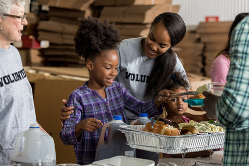

About Volunteer UNC

What are we?
Volunteer UNC is your gateway to making a difference in the University of North Carolina community!
We believe that small actions can create big impacts!
Our mission is to connect students, faculty, and staff with meaningful volunteer opportunities that promote positive change. Whether you're passionate about the environment, education, or community outreach, we strive to make volunteering accessible and rewarding for everyone at UNC.
Why Volunteer UNC?
Volunteer UNC was created to create some way for people to spread the word about volunteer opportunities, whether you're looking for possible volunteer work or looking for help on a volunteer project we can help you get in contact with who you need.